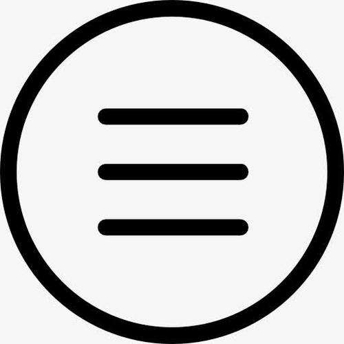

距2024年还剩：
0天
1小时
2分钟
3秒
Alice_moc
心有所向 日复一日 必有精进
我的技能
平时开发一般使用PHP，会用的框架不多，就主流的：Thinkphp，Yii，Laravel等。
前端略会，常用的前端框架是Layui，用这个框架是因为自己开发前后端更方便，文档完整。如果是开发多端应用会使用uniapp，做小程序，客户端这类的。
会一点服务器，熟悉常用Linux命令，搭建项目运行环境不成问题。MYSQL,SQLSERVER的表设计，优化。
前端略会，常用的前端框架是Layui，用这个框架是因为自己开发前后端更方便，文档完整。如果是开发多端应用会使用uniapp，做小程序，客户端这类的。
会一点服务器，熟悉常用Linux命令，搭建项目运行环境不成问题。MYSQL,SQLSERVER的表设计，优化。

项目
做后台项目居多，例如：游戏后台、数据后台，控制后台等。后台系统有WMS，ERP，CMS，CRM等。一般以作开发接口为主，也有时候前后端开发。
前端的项目有做过网页，小程序，公众号的开发。
前端的项目有做过网页，小程序，公众号的开发。
兴趣爱好
无特殊技能。平时喜欢听歌，看动漫，玩游戏。运动也还行，打球，跑步，有空闲时间喜欢爬山看海。